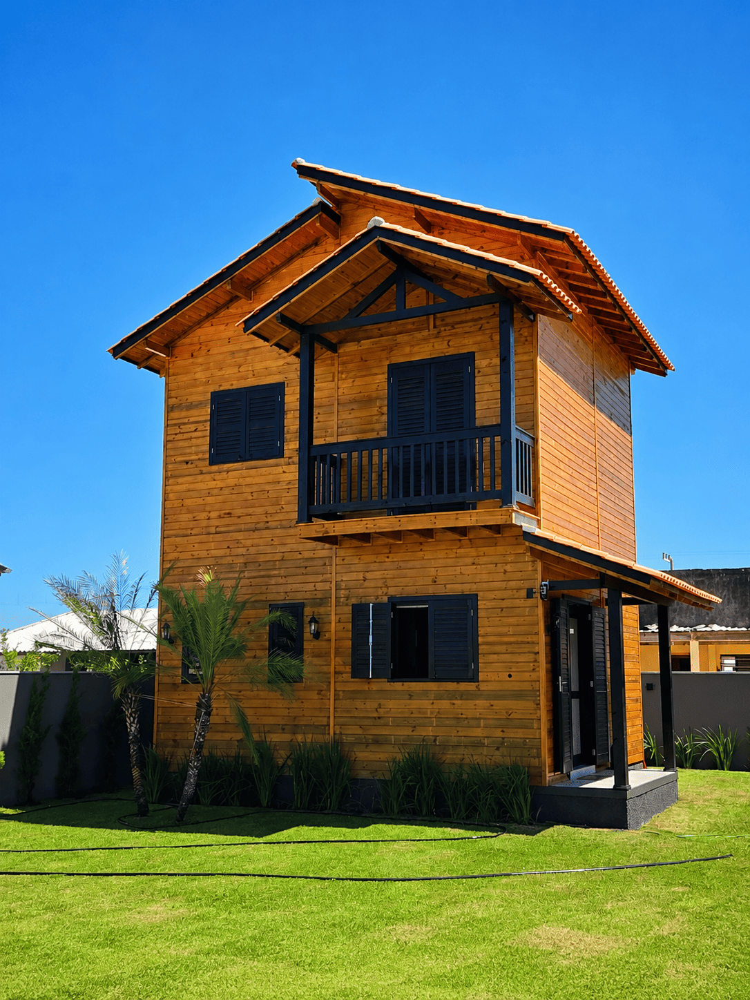
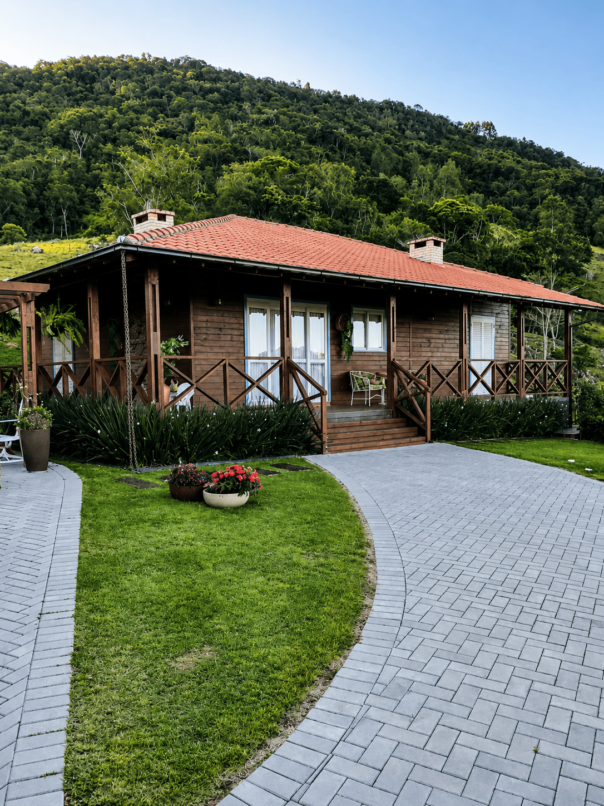
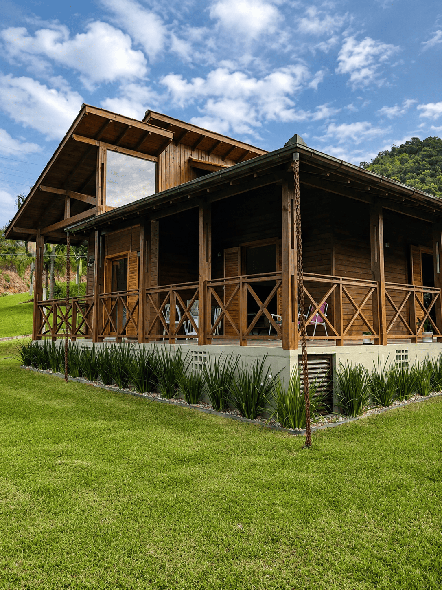
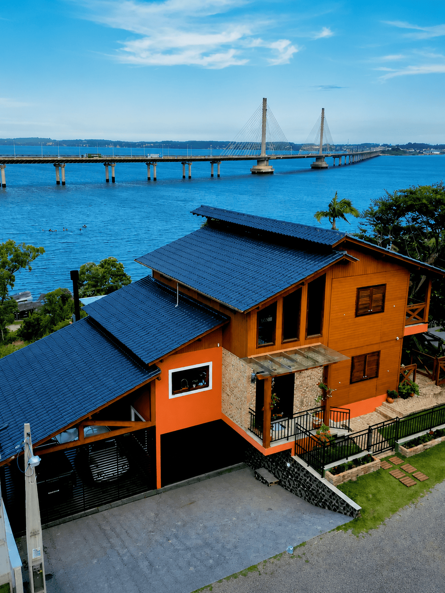
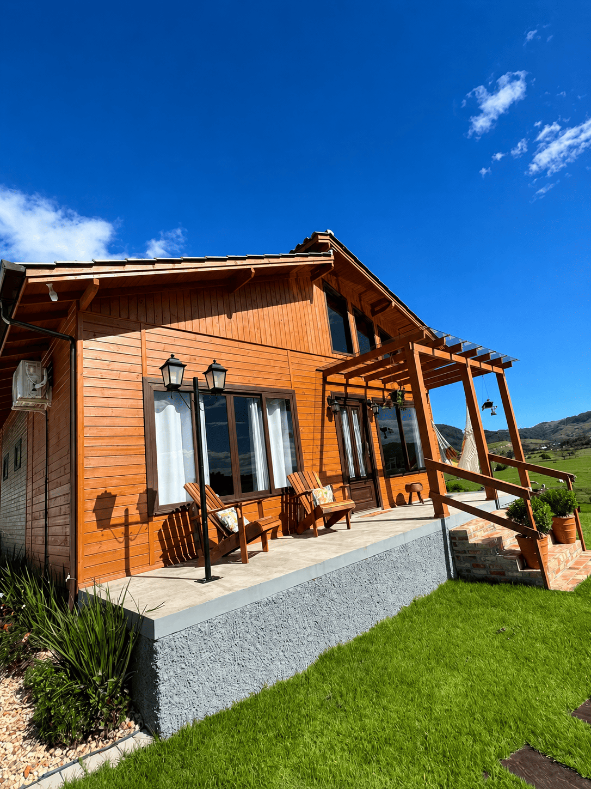
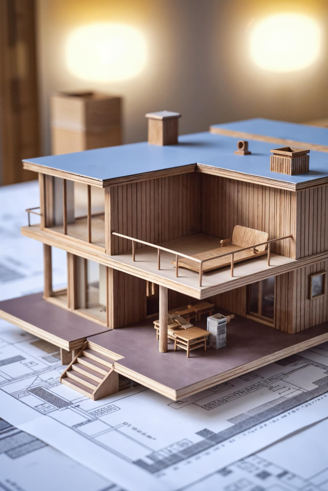
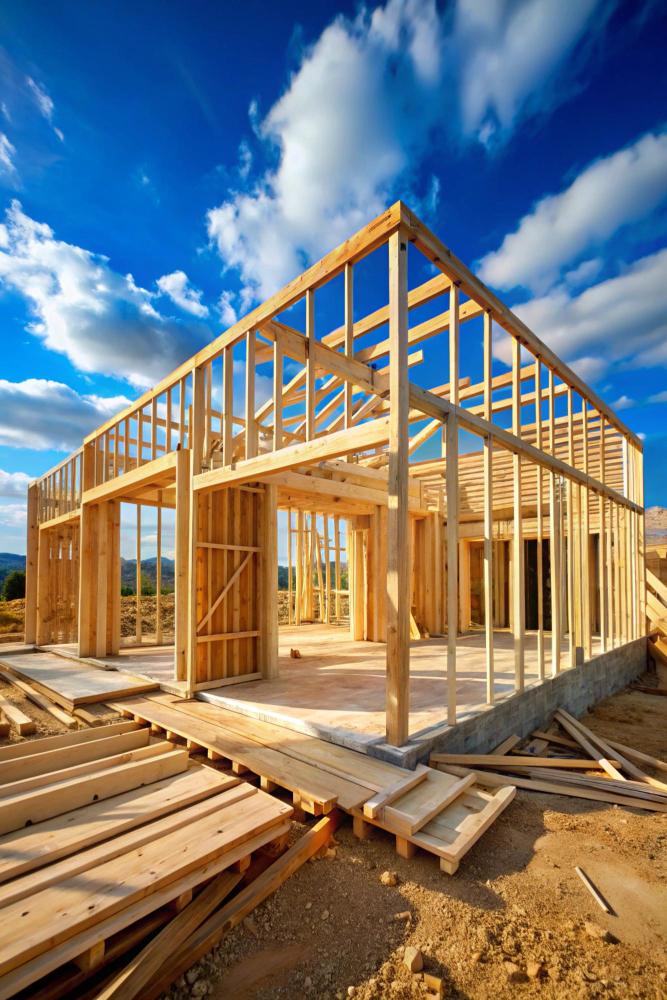
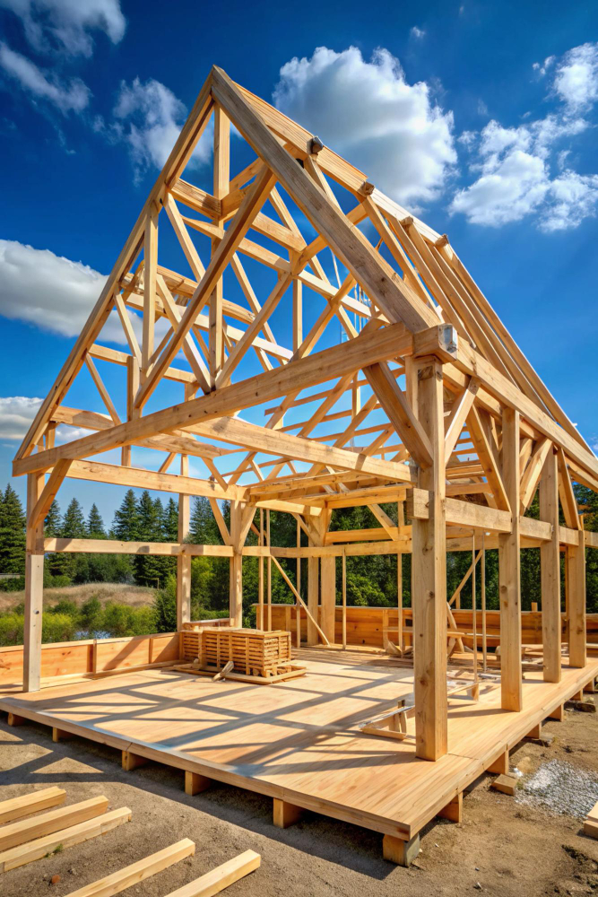
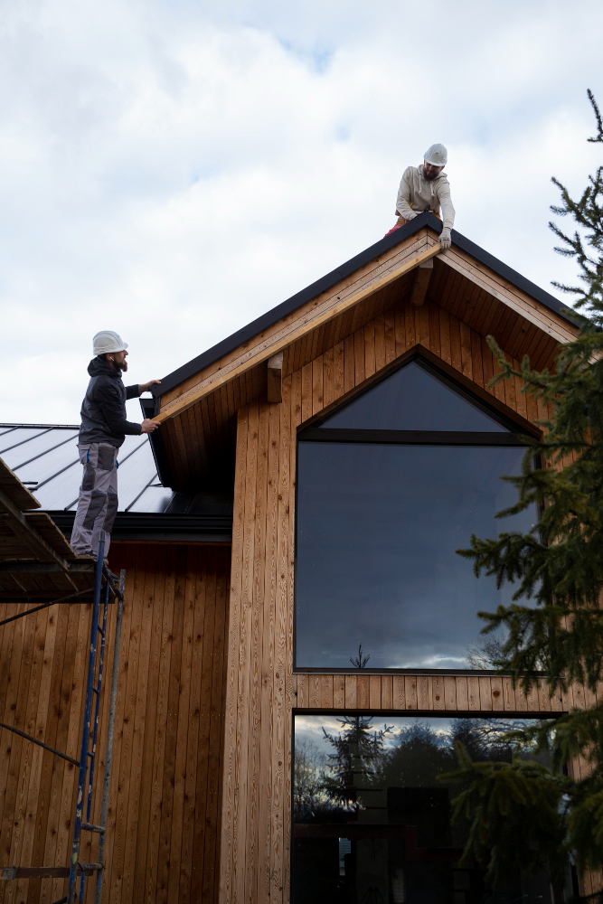
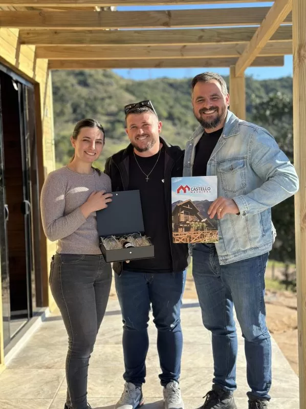

Pronta em 90 a 120 dias
Enquanto a obra convencional leva anos, sua casa Castello fica pronta em poucos meses, organizada do início ao fim.
pronta em até 120 dias
Projeto exclusivo, montagem completa e acabamento fino. Você sai do aluguel e entra direto no seu lar, sem dor de cabeça.
A casa de madeira une obra ágil, conforto de verdade e um patrimônio que valoriza com o tempo. Veja o que muda quando você constrói com a Castello.
Pedir orçamento no WhatsAppEnquanto a obra convencional leva anos, sua casa Castello fica pronta em poucos meses, organizada do início ao fim.
Planta, acabamentos, revestimentos, janelas, portas e piso escolhidos do seu jeito, do seu gosto e da sua rotina.
A madeira mantém o ambiente fresco no calor e aconchegante no frio, com bem-estar em todas as estações do ano.
Bem construída, valoriza, atravessa gerações e ainda vira fonte de renda em aluguel, revenda ou hospedagem.
A Castello cuida de projeto, materiais, prazos e acabamento. Você acompanha tudo e no fim só pega a chave.
Prego galvanizado e madeira de qualidade em todas as construções, com equipe experiente na obra todo dia.
Todos os modelos saem prontos pra morar: laje aérea, elétrica, hidráulica, cerâmica, fossa, sumidouro, vidros e aberturas.

Chave na mão
Chave na mão
Chave na mão
Chave na mãoValores de referência para casa completa. O orçamento final varia conforme a personalização, o terreno e a região. Fale com a gente e receba uma proposta sob medida.
Cada casa abaixo foi projetada, construída e entregue pela Castello para famílias de Santa Catarina e região.

Você conta o sonho, a Castello cuida de cada etapa. Acompanhe a obra do projeto até o dia de receber a chave.





Entendemos seu sonho, seu terreno e seu orçamento, e desenhamos a planta ideal pra você.
Preparamos a base da casa com técnica e segurança, prontos para receber a estrutura.
Montamos a casa com madeira de qualidade e prego galvanizado, no padrão Castello.
Elétrica, hidráulica, revestimentos, vidros e os detalhes finos que fazem do seu jeito.
Você recebe a casa pronta pra morar, completa, em 90 a 120 dias.
Avaliações reais de clientes Castello no Google Meu Negócio. Arraste para o lado e leia mais.
Tivemos uma excelente experiência com a Castello, desde a negociação da compra, modelo da casa, até a entrega dentro do prazo. Tivemos zero dor de cabeça de obra, mesmo sendo um pouco distante da cidade sede da empresa. São muito flexíveis e nos auxiliaram em todas as etapas.
Estou muito satisfeita com a experiência que tive com a Castello. Desde o início, o atendimento foi excelente, sempre prestativo e transparente. A qualidade da construção superou minhas expectativas, com acabamentos bem feitos e um ótimo padrão. Recomendo para quem busca confiança e compromisso em cada detalhe.
A Castello foi uma grata surpresa na nossa vida. Uma entrega com excelência, com negociação online e acompanhamento de obra em todas as etapas. Nunca imaginei ter uma obra de construção sem qualquer problema com o prestador do serviço. Parabéns ao Carlos e ao time da Castello.
Entrei em contato com algumas empresas da região que constroem casas de madeira e fechei negócio com a Castello. A arquiteta Talita foi super atenciosa desde o primeiro momento, com paciência para responder às minhas infinitas perguntas e adaptar o projeto até chegarmos ao ideal. A velocidade e a qualidade do trabalho são impressionantes, e a equipe toda muito cordial. Meu pai, que resistia à casa de madeira, está super feliz. Recomendo!
Conhecer a Castello foi a realização de um sonho. Nossa construção ocorreu tudo certo, dentro do prazo, e entregaram a nossa até antes. Sempre com uma comunicação clara e dispostos a esclarecer as nossas dúvidas. Com certeza recomendo o trabalho deles. Além da construção ser excelente, a equipe toda é muito profissional.
A Castello realizou meu sonho e ficou tudo perfeito, com um atendimento muito especial de todos, em especial o Carlos. Já fazem quatro anos que nossa casa foi entregue e sempre recomendo eles.
Atendimento de excelência em todas as etapas do contrato. Obra concluída dentro do prazo e sem intercorrências. Ótima experiência com a Castello Casas de Madeira. Para quem quer construir sem dores de cabeça, recomendo!
Só temos que agradecer pelo profissionalismo e dedicação em todo o processo da obra. Foi um imenso prazer trabalhar com essa equipe sensacional, com comprometimento e responsabilidade incrível. O prazo de entrega foi devidamente cumprido conforme o combinado. Recomendamos a todos o trabalho dessa equipe de excelência.
Em todas as etapas, desde o projeto até a entrega, a experiência foi ótima. A equipe da Castello trabalhou conosco para conseguirmos a casa que queríamos. Estamos satisfeitos e recomendamos, sem qualquer ressalva, a construtora.
Desde o primeiro contato até a entrega das chaves, não tenho o que reclamar. O pessoal sempre pronto para atender e tirar as dúvidas. Super indico a construtora, parabéns pelo profissionalismo.
Estava fazendo orçamento e fechei com a Castello pelo melhor preço, condições de pagamento e excelente qualidade da obra. Tudo que foi redigido no contrato foi cumprido. Eu indico para quem pensar em fazer uma casa.
Minha primeira construção com a Castello e estou muito satisfeito. A empresa conta com profissionais competentes e dedicados, sempre à disposição de seus clientes e parceiros. Uma equipe enérgica, que trabalha muito para alcançar seus objetivos. O resultado são os charmosos chalés que vão surgindo e dando um toque especial em toda a região.
Super indico a Castello. Fizeram a casa exatamente como pedimos, estavam sempre presentes na obra, atenciosos e dispostos a resolver tudo. Estamos muito contentes com a nossa casa nova. Muito obrigado!
Tivemos uma ótima experiência com a Castello, entregaram dentro do prazo, serviço de qualidade. O proprietário também é uma pessoa de fácil negociação e respondia rapidamente sempre que solicitado. Recomendo.
Peça seu orçamento sem compromisso. A Castello te acompanha do primeiro passo até a chave na mão.